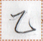
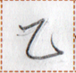

← Previous
Index
Next →
English: I worked for ten days.
Chinese: 我工作了十天。
Chinese (pinyin): Wǒ gōngzuòle shí tiān.
Pekzep (latin transcription): ie nun1 kia1 pai2 lit1 py ie naip2.
Pekzep (hanzi transcription): 於十日我入力於労。
Pekzep (linzklā):  



Sound:
Analysis:
| ie | 於 | | coverb | takes a time | during, for |
| nun1 | 十 | | noun-modifier | numeral | ten |
| kia1 | 日 | | temporal word | | day |
| pai2 | 我 | | noun | | I |
| lit1 py {ie N} | 入力 {於N} | {N} | verb | | to put effort {into N} |
| ie | 於 | | coverb | takes a place / time | at |
| naip2 | 労 | | noun | | work |